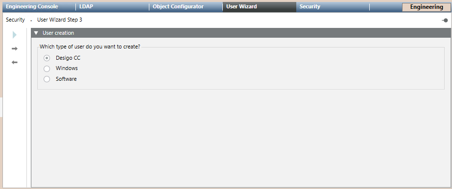

Select the Type of User
- You are in the User Management Wizard step 3 – User Creation.
- Select the type of user you want create:
- Desigo CC
- Windows if you want to create a new user who can use his Windows credentials for login.
- Software if you want to create a new user account that will only be used for a software application, such as OPC.
- Click
 .
.
